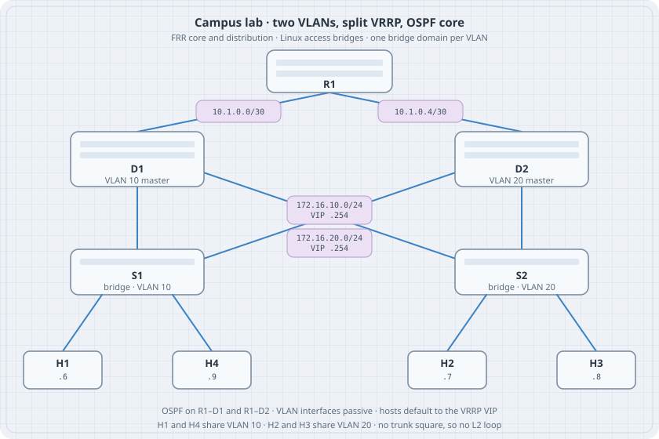

Campus Lab: VLANs, VRRP, and OSPF
Campus Lab: VLANs, VRRP, and OSPF
A campus is three jobs at once. Access ports keep user and server broadcast domains apart. Two distribution routers share a virtual gateway so a host still has a first hop when one router stops. A core router learns those prefixes with OSPF so the path beyond the closet is dynamic. This chapter builds that shape as one netlab file on FRR and Linux.

Learning goals
By the end of this chapter you can:
- Read a campus as access bridges, distribution SVIs, and a routed core
- Express VLANs, VRRP, and OSPF in one
topology.yml - Predict which router owns each virtual IP
- Check same-VLAN reachability and inter-VLAN reachability separately
- Explain why this lab does not trunk both VLANs around a square
What the design is doing
R1 OSPF core
/ \
D1 D2 IRB, VRRP, OSPF
| \ / |
| \/ |
S1 S2 S1 VLAN 10, S2 VLAN 20
H1 H4 H2 H3| Layer | Nodes | Forwarding |
|---|---|---|
| Core | R1 | OSPF only. Two point-to-point links. |
| Distribution | D1, D2 | One SVI per VLAN, VRRP on each SVI, OSPF toward R1. |
| Access | S1, S2 | Bridge only. S1 is VLAN 10. S2 is VLAN 20. |
| Hosts | H1–H4 | Linux. Default route is the VLAN’s VRRP address. |
VRRP is split on purpose. D1 is master for VLAN 10 (priority 110) and backup for VLAN 20 (priority 100). D2 is the opposite. A failure of one distribution router moves only one virtual IP. The other VLAN stays on its master.
Hosts in one VLAN talk at layer 2 through their access bridge. A packet from H1 (VLAN 10) to H2 (VLAN 20) hits the VLAN 10 virtual IP, is routed by whichever router owns it, and leaves on the VLAN 20 SVI. Both distribution routers have both SVIs, so that hop does not need the core. OSPF still matters: R1 must learn 172.16.10.0/24 and 172.16.20.0/24, and the core links must come up Full.
The VLAN SVIs are OSPF passive. They are advertised, and they do not send hellos onto the access bridges.
Why this is not a trunk square
A common drawing connects both access switches to both distribution switches with trunks that carry every VLAN. That is a layer-2 loop. Cisco layer-2 images break the loop with spanning tree. FRR’s STP does not run on VLAN trunks (BPDUs go out tagged). Linux in netlab has no STP module. This lab keeps each VLAN in its own bridge, so D1 and D2 can both sit on that VLAN for VRRP, and the two VLANs never form a cycle.
On these Linux bridges an access VLAN is untagged. The VLAN id is the bridge (vlan10, vlan20), not an 802.1Q tag on the wire. Tagged trunks are the subject of the VLANs and trunks chapter. Use them when you want to see tags, on a topology that is still loop-free.
Topology
Checked with netlab 26.10 (networklab on PyPI). netlab create plans addresses and writes FRR and Linux config. It does not start containers.
# topology.yml
---
name: campus
provider: clab
defaults.device: frr
vlans:
users:
id: 10
mode: irb
prefix.ipv4: 172.16.10.0/24
gateway.protocol: vrrp
gateway.id: 254
gateway.vrrp.group: 10
links: [ H1-S1, H4-S1, D1-S1, D2-S1 ]
servers:
id: 20
mode: irb
prefix.ipv4: 172.16.20.0/24
gateway.protocol: vrrp
gateway.id: 254
gateway.vrrp.group: 20
links: [ H2-S2, H3-S2, D1-S2, D2-S2 ]
groups:
dist:
members: [ D1, D2 ]
module: [ vlan, ospf, gateway ]
vlans:
users:
ospf.passive: true
servers:
ospf.passive: true
access:
members: [ S1, S2 ]
device: linux
module: [ vlan ]
vlan.mode: bridge
hosts:
members: [ H1, H2, H3, H4 ]
device: linux
role: host
module: [ routing ]
routing.static:
- ipv4: 0.0.0.0/0
nexthop.gateway: true
nodes:
R1:
module: [ ospf ]
D1:
vlans.users.gateway.vrrp.priority: 110
vlans.servers.gateway.vrrp.priority: 100
D2:
vlans.users.gateway.vrrp.priority: 100
vlans.servers.gateway.vrrp.priority: 110
S1:
S2:
H1:
H2:
H3:
H4:
links:
- R1-D1
- R1-D2
validate:
r1_sees_d1:
description: R1 is Full with D1
nodes: [ R1 ]
devices: [ frr ]
plugin: ospf_neighbor('10.0.0.2')
r1_sees_d2:
description: R1 is Full with D2
nodes: [ R1 ]
devices: [ frr ]
plugin: ospf_neighbor('10.0.0.3')
same_vlan:
description: H1 reaches H4 inside VLAN 10
nodes: [ H1 ]
devices: [ linux ]
plugin: ping('172.16.10.9')
other_vlan:
description: H1 reaches H2 across VLANs
nodes: [ H1 ]
devices: [ linux ]
plugin: ping('172.16.20.7')gateway.id: 254 is the last usable host in the /24, so the virtual IPs are 172.16.10.254 and 172.16.20.254. nexthop.gateway: true tells each host to use the gateway on its own VLAN. Node order fixes the other host addresses. Insert a node above H1 and those addresses move. Read node_files/ after netlab create if you change the file.
Addresses netlab assigned
netlab create with the file above, and with nodes declared in the order R1, D1, D2, S1, S2, H1, H2, H3, H4, produced this plan. The containerlab file uses quay.io/frrouting/frr:10.7.1 for the routers and python:3.13-alpine for Linux nodes.
| Node | Interface | Address | Notes |
|---|---|---|---|
| R1 | lo | 10.0.0.1/32 | OSPF router-id |
| R1 | eth1 | 10.1.0.2/30 | to D1 |
| R1 | eth2 | 10.1.0.6/30 | to D2 |
| D1 | lo | 10.0.0.2/32 | |
| D1 | eth1 | 10.1.0.1/30 | to R1 |
| D1 | vlan10 | 172.16.10.2/24 | VRRP 10 priority 110 |
| D1 | vlan20 | 172.16.20.2/24 | VRRP 20 priority 100 |
| D2 | lo | 10.0.0.3/32 | |
| D2 | eth1 | 10.1.0.5/30 | to R1 |
| D2 | vlan10 | 172.16.10.3/24 | VRRP 10 priority 100 |
| D2 | vlan20 | 172.16.20.3/24 | VRRP 20 priority 110 |
| H1 | eth1 | 172.16.10.6/24 | default via .254 |
| H4 | eth1 | 172.16.10.9/24 | default via .254 |
| H2 | eth1 | 172.16.20.7/24 | default via .254 |
| H3 | eth1 | 172.16.20.8/24 | default via .254 |
S1 and S2 get no IP. Their startup scripts create a bridge and enslave the access ports. D1’s rendered VRRP stanza is the same idea as a hand-written interface block, generated from the YAML priorities:
interface vlan10
vrrp 10 priority 110
vrrp 10 preempt
vrrp 10 ip 172.16.10.254
interface vlan20
vrrp 20 priority 100
vrrp 20 preempt
vrrp 20 ip 172.16.20.254D2 swaps the priorities. Both SVIs on D1 also contain ip ospf passive.
Bring it up
netlab up needs root and a container runtime. This chapter’s create step was run here. The up, connect, and validate steps were not.
python3 -m venv netlab-venv
netlab-venv/bin/pip install networklab==26.10
netlab-venv/bin/netlab create
netlab-venv/bin/netlab up
netlab-venv/bin/netlab validateRead state from the devices:
netlab connect D1 vtysh -c "show vrrp"
netlab connect D2 vtysh -c "show vrrp"
netlab connect R1 vtysh -c "show ip ospf neighbor"
netlab connect R1 vtysh -c "show ip route"
netlab connect H1 ip route
netlab connect H1 ping -c 3 172.16.10.9
netlab connect H1 ping -c 3 172.16.20.7Predict
- D1 is Master on VRRP group 10 and Backup on group 20. D2 is the reverse.
- R1 has two Full neighbors,
10.0.0.2and10.0.0.3, and both VLAN prefixes in the OSPF table. - H1 pings H4 without leaving VLAN 10. The path does not use a router.
- H1 pings H2. The first hop is
172.16.10.254on D1, then D1 routes onto VLAN 20. - S1 has no route to
172.16.20.0/24. It is a bridge.
Drill — move VLAN 10
On D1, shut VRRP group 10 and watch D2 take 172.16.10.254. H1’s default route does not change. netlab connect H1 ping -c 3 172.16.20.7 should work again once D2 is Master. Bring the group back and D1 should preempt, because preempt is on.
Tear the lab down with netlab down --cleanup when you also want the generated files removed. Without --cleanup, containers stop and topology.yml stays.
Where this sits
Capstone C1 in the capstone outline is this network. The earlier chapters still own the mechanisms: VLAN access versus trunk, OSPF adjacency, and VRRP on FRR. This page is the place those three show up in one file.
Sources
- netlab — VLANs, first-hop gateway (
gateway.id,vrrp.group,vrrp.priority), OSPF, static routes (nexthop.gateway) - containerlab — documentation